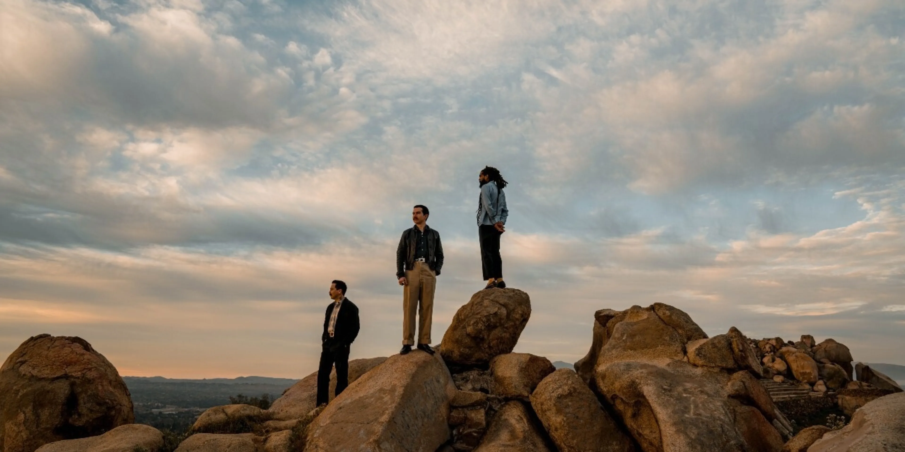
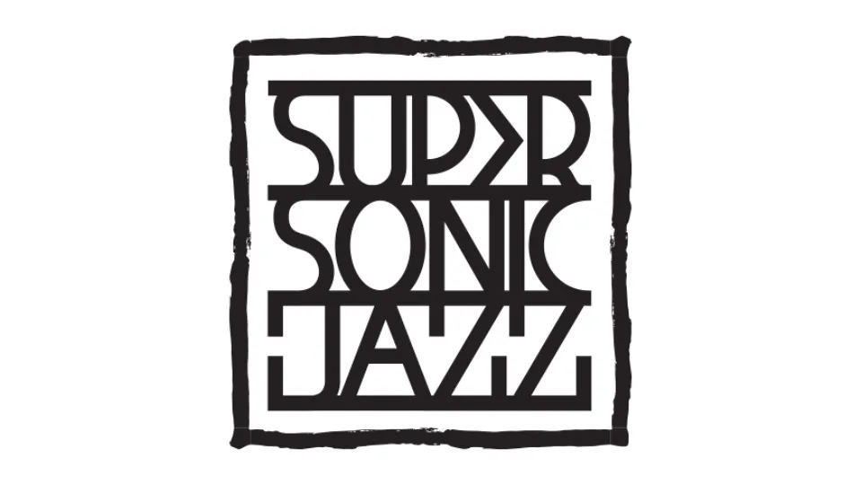
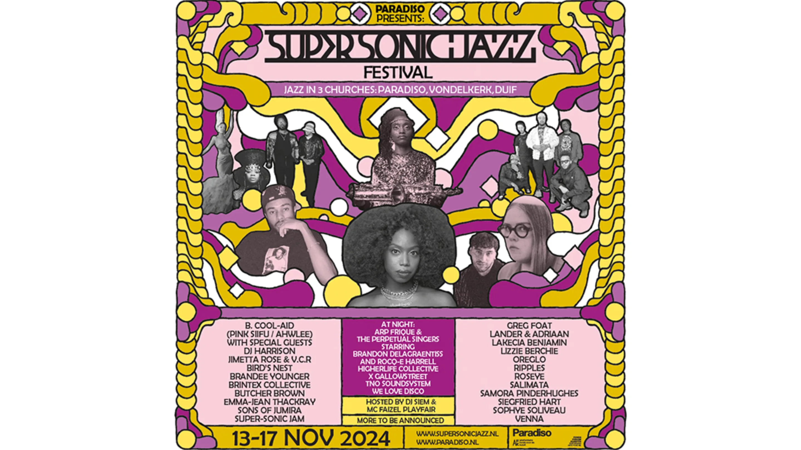
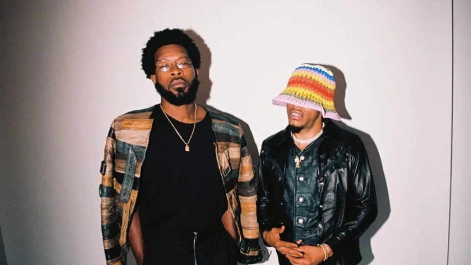
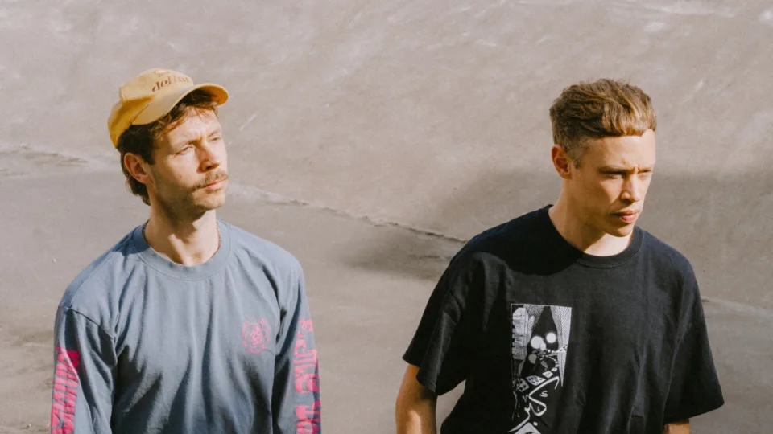
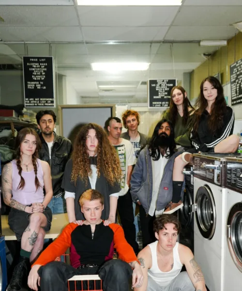

Thee Sacred Souls
Waiting List
Ticket €34.30
Excluding € 4,00 monthly membership
Saturday 15 February 2025
In Paradiso - Main Hall
Doors: 19:00, Support: 13:30, Main programme: 20:30
This program is sold out. Join the waiting list. There you can also sell your ticket to someone on the waiting list. More info.
Tickets will be available two days prior to the event via your account.
Limited tickets per person
Thee Sacred Souls bestaat uit drummer Alex Garcia, bassist Sal Samano en zanger Josh Lane, die in 2019 samen een band vormden en binnen een jaar een platencontract in de wacht sleepten bij het iconische funk- en soullabel Daptone Records, ooit thuisbasis van onder andere Sharon Jones & The Dap-Kings en Charles Bradley. Bij Thee Sacred Souls draait alles om het brengen van een zo mooi en authentiek mogelijk geluid; om deze reden kiest het trio er voor om al hun muziek analoog op te nemen in plaats van digitaal. Hun eerste singles werden ruim tien miljoen keer gestreamd, en trokken de aandacht van mainstream media zoals Rolling Stone maar ook van artiesten zoals Timbaland en Gary Clark Jr. Met lyrische recensies en een groeiende fanbase lijkt de aandacht voor deze jonge band uit San Diego de komende jaren als een lopend vuurtje te zullen verspreiden. Op 10 september speelt de band in de Tolhuistuin, waar de kaarten binnen een mum van tijd waren uitverkocht. Gelukkig krijgen degenen die achter het net visten een nieuwe kans: op 15 februari keren ze terug naar Amsterdam, ditmaal voor een optreden in Paradiso.
View event on FacebookLine-up
Main Hall
Thee Sacred Souls
Super-Sonic Jazz
Super-Sonic Jazz is an Amsterdam-based non-profit platform for exciting artists who move within the universe of jazz. We release music on our independent record label, and in collaboration with Paradiso, we organize concerts, jams, and the annual Super-Sonic Jazz Festival. This year Super-Sonic Jazz Festival 2024 will take place from Wednesday, November 13th to Sunday, November 17th, 2024, at Paradiso, de Duif and the Vondelkerk in Amsterdam.
 -

15 Nov 2024
B. Cool-Aid, Venna and more · Super-Sonic Jazz Festival 2024
-

17 Nov 2024
Lander & Adriaan, Super-Sonic Jam and more · Super-Sonic Jazz Festival 2024
-
16 Nov 2024
Butcher Brown, Lakecia Benjamin, Emma-Jean Thackray and more · Super-Sonic Jazz Festival 2024
-

14 Nov 2024
Brandee Younger & Sophye Soliveau · Super-Sonic Jazz Festival 2024
How to get to Paradiso
Paradiso is on the Weteringschans 6-8 in Amsterdam. That is very close to Leidseplein. From every part of the city there are trams heading towards Leidseplein. From there on out you can walk to Paradiso. Free and secured underground bike parking is available on the opposite side of Paradiso. Travelling by car is difficult, since there are only a few busy parking lots nearby.
Google Maps